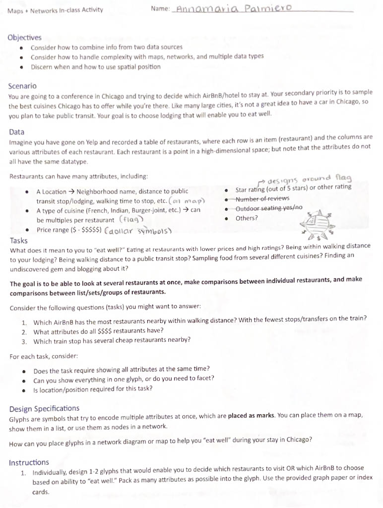

The intent of the following portfolio is to showcase my growth and increased understanding of data visualization throughout the Spring 2025 semester. Additionally, I wanted an opportunity to explore coding in HTML and CSS, as I have not coded in either language before!
☆ To achieve these goals, I will Refine + Reflect on two artifacts:
(1) Dear Data Postcard
(2) Original Board Game centered on Marks and Channels
☆ I will Curate + Reflect on two separate artifacts:
(1) Maps and Networks in-class activity
(2) Curate a guideline for Dashboard "Best Practices"
☆ I will present the above material in a webpage designed in HTML and CSS
My intent for choosing these specific artifacts were to demonstrate that data visualization can be creative, showcase work I am proud of, and reflect on my group's Final Release.
Dear Data Postcard
Reflection
This artifact is one I created for the purpose of the Final Portfolio. I chose to create a postcard inspired by the original Dear Data postcards because I appreciated the opportunity to delve deeper into artistic visualizations. Something I tend to find frustrating with technology is not being able to get it to do exactly what I envision. In this situation, I never know whether this limitation is due to the software itself, or my knowledge of it. However, making a postcard meant designing something by hand. This meant I knew the limitations of my own creative abilities from the start. This made creating this artifact enjoyable, and calming! Additionally, the design process was completely different from the other visualizations I created this semester. Scanning example postcards from the original Dear Data pair, at first glance, you may not be able to tell if some designs encode data at all. They were beautiful. So, for just a moment, I concerned myself with form just as much as function (bad, I know).
Relevant Artifact Photos
Board Game
Reflection
Relevant Artifact Photos
Maps & Networks Activity
Reflection
Looking through my classwork over the past semester, I was most proud of this assignment. This is due in part to the fact that this assignment seemed like a puzzle. My solution to this “puzzle” was a bit odd, and definitely not perfect. But, the beauty of this assignment was that no two individuals at my table, or even in the classroom likely had the same solution, as there was no right or wrong way to represent the given data, or complete the given tasks.
By completing this assignment, I learned that past fundamental suggestions, data visualization is truly subjective to the creator. For example, it is advised that when you have geospatial data, you should visualize it using a map. However, past the suggestion of having a map, many of the vis design choices that follow are dataset and creator dependent. A creator may follow bad, good, or neutral practices. Their vis may make perfect sense, have good aesthetics, and accurately represent the data. Alternatively, they may choose confusing glyphs, misleading color scales, or use nonsensical dual axes.
Coming up with effective glyphs is a skillset I hope to continue building on as I continue my data visualization journey. I consistently found myself impressed with in-class examples containing glyphs that genuinely did a great job of portraying data. That being said, in certain cases, I feel glyphs can feel unprofessional, or too “maximalist” for a dry corporate environment. However, I think there is a balance between function and form to be found when using glyphs, as shown in class examples. I hope to continue working towards finding this balance in my future visualizations that include glyphs! (I’m not quite there yet though… don't think stars are acceptable in corporate)
Relevant Artifact Photos
Best Practices: Dashboard Edition
Reflection
Relevant Artifact Photos